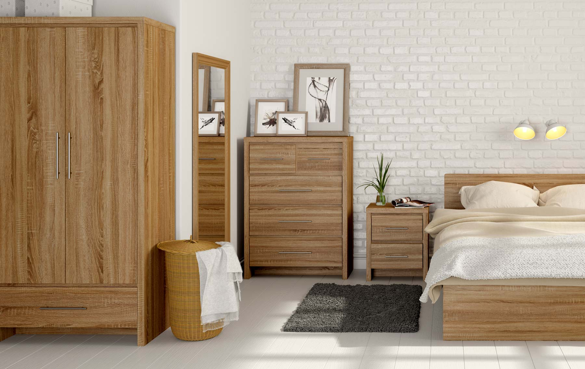
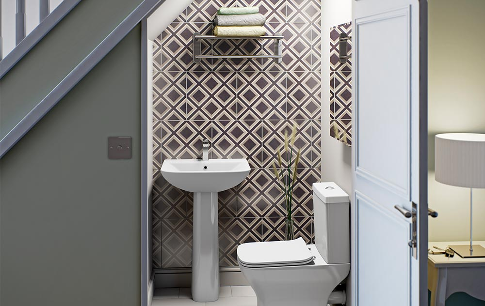

BRIEF
We take great pride in delivering superior, compelling ad content to our clients. Recently we were approached by VictoriaPlum.com to design a TV campaign that would help to establish them as the UK's leading bathroom retailer.
CLIENT
Project includes: CGI, Video
SOLUTION
We created a stunning new TV campaign and thousands of support images for the VictoriaPlum.com website, showcasing how the latest CGI technology can be crafted to remove the need for an expensive set build or location filming.



RESULTS
The campaign debuted on all major UK TV channels during May 2015 and has seen multiple follow-up adverts through 2016, generating a wildly enthusiastic response including VictoriaPlum.com's biggest ever January sales.
“We have seen a significant boost in sales thanks to the excellent campaign from the CIC guys. We’re all looking forward to the next instalment and ongoing collaboration.”
- Chris Johnson
Head of Design at VictoriaPlum.com